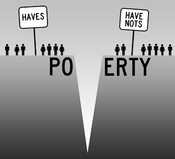
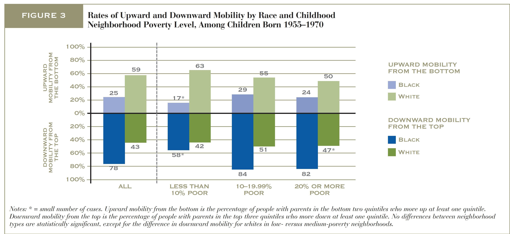

The Psychological Impacts of Income Segregation
This article will focus on four effects of residential income Segregation:
Social Inequality
Social Inequality refers to the unequal distribution of resources and opportunities to individuals based on their status in the social hierarchy. When it comes to housing accessibility, people are often not permitted access to certain neighborhoods due to discrimination based on their income source, race, family composition, etc. With limited access to these neighborhoods, it is likely that people with certain SES status will remain restricted in their residential locations. Often time’s social inequalities are exacerbated by neighborhood effects, such as concentrated poverty, community violence, or truancy. These effects often lead to stigmatization of the people that reside in those neighborhoods which further continues the cycle of residential income segregation.

Children are the most impacted by the social inequalities that emerge from residential income segregation. Children are directly impacted by environmental factors that they are constantly exposed to via social learning mechanism. Neighborhoods that are high in community violence and risk behaviors are often low in educational and job attainment. For children who are reared in these types of communities, they are bound to perceive these negative influences as more commonplace, which may limit their potential to rise beyond their social class.1
Social mobility
Upward mobility is highly tied to economic standing and access to equal opportunities. Studies show that one of the contributing factors of intergenerational income stagnation is educational attainment and lack of economic empowering network influences. Neighborhoods with high levels of wealth are more likely to have greater access to high quality community resources. Neighborhoods with primarily low-income residents may not have access to the resources and opportunities that are outside of their neighborhood, and may have to settle for substandard versions. For persons that live in a highly segregated low-income community, there may be limited access to resources that can intercept a cycle of poverty (higher job opportunities, higher quality schools, higher-status networked connections).
Educational attainment and job placement are key components of social mobility. Schools in highly segregated low-income areas on average perform worse than schools in higher income areas. 2 Nearly half of the funding for public schools come from the local government, which receives those funds through taxation. For schools that are in areas of low-income, there are bound to receive less funding due to the smaller share of wealth these individuals may have. This leads to poor quality educational programs and less qualified teachers within those schools. As a result, the children who attend these schools will often receive an inferior standard of education and may be likely to underperform their peers in higher income neighborhoods. With a lower performance in school, this will limit their occupational opportunities after graduation, which limit their ability to move of their social standing. 2
Health Effects
Housing quality has an enormous influence on the physical and mental health of the individuals that reside in them. Studies shows that a majority of physical injuries occur inside the household3. In large metropolitan areas, population density often leads to overcrowding, inadequate housing, and an increase in maintenance defects. Homes with substandard conditions might be infiltrated with pest, mold, and poor ventilation. This can lead to a variety of chronic health defects and infections. Maintenance defects within these homes can lead to poor air quality, lead poisoning, and lack of temperature regulation, which for younger children and some adults can affect cognitive development and aggravate conditions like asthma or respiratory infections3.
A neighborhood’s characteristics may encourage positive wellbeing by providing areas that are free from crime, violence and pollution for children and adults to play or exercise. Neighborhoods with limited liquor stores and fast food establishments and with accessible grocery stores can make it easier for families to find and eat healthful foods. Socioeconomic conditions in neighborhoods may improve health by affording access to employment opportunities and public resources including efficient transportation, an effective police force and high-performing schools. Access to neighborhoods with health-promoting conditions varies with household economic and social resources. Concentration of low quality housing in disadvantaged neighborhoods further worsens ethnic socioeconomic differences in health.4
Racial Segregation
Studies demonstrate that racial segregation combined with income segregation means that low-income black and Hispanic families will tend to cluster in communities that are disadvantaged along a number of dimensions, such as average educational attainment, family structure, and unemployment. In contrast, low-income white families, although affected by income segregation as well, tend to live in neighborhoods with higher average incomes than even middle-class black and Hispanic families.5

There has a variety of reasons including:
- Racial discrimination in housing
- Individual preferences
Black individuals are more likely to be witness to a practice called “steering”, where a real estate broker or agent may persuade them to move to a less ideal location. Because of this, black tenants are more likely to reside in neighborhoods with predatory lending practices, which hinders economic growth 5
Sometimes, it may be that members of racial subgroups prefer to live close to cultural institutions or entities that strike familiarity within their racial subgroup. Particularly for affluent minorities, we see that they may often prefer to live in a neighborhood with lower quality opportunism and resources, but with higher population of members in their ethnic group. This may also be due to racial discrimination in non-minority neighborhoods. 5
References
- Abramson, Alan J., Mitchell S. Tobin, and Matthew R. VanderGoot. 1995. The Changing Geography of Metropolitan Opportunity: The Segregation of the Poor in U.S. Metropolitan Areas, 1970 to 1990. Housing Policy Debate 6:45–72.rg/10.21201/2017.1350
- Jenkins, Stephen P., John Micklewright, and Sylke V. Schnepf. 2006. Social Segregation in Schools: An International Comparison. Jelleyman T and Spencer N. Residential Mobility in Childhood and Health Outcomes: A Systematic Review. J Epidemiol Community Health, 62(7): 584-92, 2008.
- Krieger J and Higgins DL. "Housing and Health: Time Again for Public Health Action." Am J Public Health, 92(5): 758-68, 2002.
- Logan, John R. 2011. Separate and Unequal: The Neighborhood Gap for Blacks, Hispanics, and Asians in Metropolitan America US2010 Project (July). Available at: www.s4.brown.edu/us2010/Data/Report/report0727 (accessed May 1, 2018).
- Logan, John R., and Brian J. Stults. 2011. The Persistence of Segregation in the Metropolis: New Findings from the 2010 Census. US2010 Project (March 24). Available at: www.s4.brown.edu/us2010/Data/Report/report0727 .pdf (accessed May 1. 2018).
- State of New York City’s Housing and Neighborhoods in 2015. Fourth Grade Student Performance [Map]. 2015. NYU Furman Center(acccessed April 28th, 2018)
- State of New York City’s Housing and Neighborhoods in 2015. NYC Poverty Status by Census Map [Map]. 2015. NYU Furman Center(acccessed April 28th, 2018)
- Sharkey, P. (2009). Neighborhoods and the black-white mobility gap. Economic Mobility Project.
- Social Explorer. Total Population Black or African American Alone/Civil Population Unemployed.. 2016. based on data from U.S. Census Bureau (accessed May 7th, 2018).